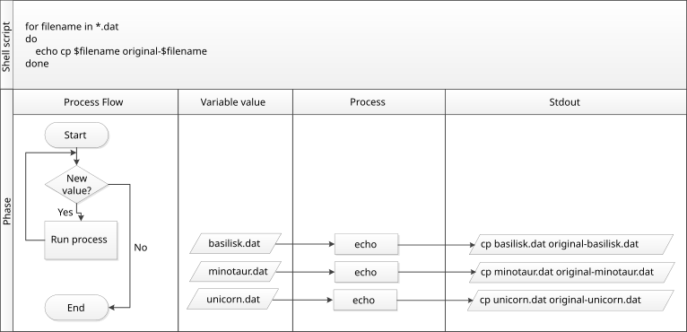

ループ
最終更新日：2024-11-22 | ページの編集
概要
質問
- 多くの異なるファイルに対して同じ操作を行うにはどうすればよいですか？
目的
- 複数のファイルセットに対して、1つまたは複数のコマンドを個別に適用するループを書く。
- ループ変数がループの実行中に取る値を追跡する。
- 変数名とその値の違いを説明する。
- ファイル名にスペースや一部の句読点文字を使用してはいけない理由を説明する。
- 最近実行したコマンドを確認する方法を示す。
- 再入力せずに最近実行したコマンドを再実行する。
ループは、リスト内の各項目に対してコマンドやコマンドのセットを繰り返すことを可能にするプログラミング構造です。 そのため、自動化を通じた生産性向上の鍵となります。 ワイルドカードやタブ補完と同様に、ループを使用することで必要な入力量が減少し（その結果、タイプミスの数も減少します）、効率が向上します。
例えば、数百のゲノムデータファイルがbasilisk.dat、minotaur.dat、unicorn.datという名前で保存されているとします。
この例では、exercise-data/creaturesディレクトリを使用しますが、ここには3つの例ファイルしかありません。
ただし、この原則は多数のファイルに適用できます。
これらのファイルの構造は同じです：共通名、分類、更新日が最初の3行に記載され、 その後にDNA配列が続きます。 ファイルの内容を確認してみましょう：
各種の分類を出力したい場合、それは各ファイルの2行目に記載されています。
各ファイルに対してhead -n 2を実行し、これをtail -n 1にパイプで渡す必要があります。
この問題を解決するためにループを使用しますが、まずループの一般的な形式を擬似コードで見てみましょう：
BASH
# "for"という単語は「Forループ」コマンドの開始を示します
for thing in list_of_things
# "do"という単語は実行すべきジョブリストの開始を示します
do
# ループ内のインデントは必須ではありませんが、可読性を高めます
operation_using/command $thing
# "done"という単語はループの終了を示します
done この形式を例に適用すると次のようになります：
BASH
$ for filename in basilisk.dat minotaur.dat unicorn.dat
> do
> echo $filename
> head -n 2 $filename | tail -n 1
> done出力
basilisk.dat
CLASSIFICATION: basiliscus vulgaris
minotaur.dat
CLASSIFICATION: bos hominus
unicorn.dat
CLASSIFICATION: equus monocerosプロンプトを確認しよう
ループを入力中、シェルプロンプトが$から>に変わり、再び$に戻ることに気づいたかもしれません。
2つ目のプロンプト>は、まだ完全なコマンドを入力していないことを思い出させるために異なっています。
セミコロン;を使用すれば、1行に複数のコマンドを記述することができます。
シェルはforというキーワードを見ると、リスト内の各項目に対して1回ずつコマンド（またはコマンドグループ）を繰り返すことを認識します。
ループが実行されるたびに（これを「反復」と呼びます）、リスト内の1つの項目が順番に変数に割り当てられ、
ループ内のコマンドが実行され、リストの次の項目に進みます。
ループ内では、変数の値を取得するためにその名前の前に$を付けます。
$はシェルインタープリタに対して、
その変数を名前として扱い、その値を代入するよう指示します。
この例では、リストは3つのファイル名basilisk.dat、minotaur.dat、unicorn.datです。
ループが反復されるたびに、まずechoを使用して現在の$filename変数の値を出力します。
これは結果には必要ありませんが、操作の流れを追いやすくするために役立ちます。
次に、現在の$filenameによって参照されるファイルに対してheadコマンドを実行します。
ループの最初の実行時、$filenameはbasilisk.datです。
インタープリタはこのファイルに対してheadを実行し、
最初の2行をtailコマンドにパイプで渡します。
その結果、basilisk.datの2行目が出力されます。
2回目の実行時、$filenameはminotaur.datになります。
今回はheadがminotaur.datに対して実行され、同様の操作が行われます。
3回目の実行時、$filenameはunicorn.datになり、
headがそのファイルに対して実行されます。
リストが3項目だけなので、シェルはforループを終了します。
同じ記号、異なる意味
ここでは、>がシェルプロンプトとして使用されていますが、
>は出力をリダイレクトする際にも使用されます。
同様に、$はシェルプロンプトとして表示されますが、変数の値を取得する際にも使用されます。
シェルが>または$を表示している場合、それは入力を待っているプロンプトです。
自分で>または$を入力する場合、それは出力をリダイレクトしたり、
変数の値を取得するための命令です。
変数を使用する際には、変数名を明確に区切るために名前を波括弧で囲むこともできます：
$filenameは${filename}と同等ですが、
${file}nameとは異なります。
他人のプログラムでこの記法を見かけるかもしれません。
このループでは、変数をfilenameと名付けてその目的を人間の読者にとって分かりやすくしています。
シェル自体は変数が何と呼ばれるかは気にしません。
例えば、このループを以下のように書いても同じように動作します：
または：
BASH
$ for temperature in basilisk.dat minotaur.dat unicorn.dat
> do
> head -n 2 $temperature | tail -n 1
> doneただし、これはやめましょう。
プログラムは人間が理解できて初めて役に立ちます。
意味のない名前（例えばx）や誤解を招く名前（例えばtemperature）は、
プログラムが読者の意図通りに動作しない可能性を高めます。
上記の例では、変数（thing、filename、x、temperature）には、
コードを書く人や読む人にとって意味が分かるものであれば、
他の名前を使用しても問題ありません。
また、ループはファイル名だけでなく、 例えば数字のリストやデータのサブセットなど、他の用途にも使用できます。
自分でループを書いてみよう
0から9までの10個の数字をエコー出力するループを書くにはどうすればよいでしょうか？
ループ内での変数
この演習は、shell-lesson-data/exercise-data/alkanesディレクトリを参照します。
ls *.pdbを実行すると、次の出力が得られます：
出力
cubane.pdb ethane.pdb methane.pdb octane.pdb pentane.pdb propane.pdb次のコードの出力はどうなりますか？
次に、以下のコードの出力はどうなりますか？
なぜこれら2つのループは異なる出力を生成するのでしょうか？
最初のコードブロックでは、ループを通じて各反復で同じ出力が得られます。
Bashはループ本体内でワイルドカード*.pdbを展開します
（ループが開始する前にも展開されます）、
そしてそれをlsでリストします。
展開されたループは以下のようになります：
BASH
$ for datafile in cubane.pdb ethane.pdb methane.pdb octane.pdb pentane.pdb propane.pdb
> do
> ls cubane.pdb ethane.pdb methane.pdb octane.pdb pentane.pdb propane.pdb
> done出力
cubane.pdb ethane.pdb methane.pdb octane.pdb pentane.pdb propane.pdb
cubane.pdb ethane.pdb methane.pdb octane.pdb pentane.pdb propane.pdb
cubane.pdb ethane.pdb methane.pdb octane.pdb pentane.pdb propane.pdb
cubane.pdb ethane.pdb methane.pdb octane.pdb pentane.pdb propane.pdb
cubane.pdb ethane.pdb methane.pdb octane.pdb pentane.pdb propane.pdb
cubane.pdb ethane.pdb methane.pdb octane.pdb pentane.pdb propane.pdb2つ目のコードブロックでは、各ループの反復で異なるファイルがリストされます。
変数datafileの値が$datafileを使用して評価され、
その値がlsコマンドでリストされます。
出力
cubane.pdb
ethane.pdb
methane.pdb
octane.pdb
pentane.pdb
propane.pdb4が正解です。*はゼロ個以上の文字に一致するため、文字cで始まり、その後にゼロ個以上の文字が続くファイル名が一致します。
4が正解です。*はゼロ個以上の文字に一致するため、文字cの前にゼロ個以上の文字があり、
文字cの後にもゼロ個以上の文字があるファイル名が一致します。
ループでファイルに保存する - パート1
shell-lesson-data/exercise-data/alkanesディレクトリ内で、このループの効果は何ですか？
-
cubane.pdb、ethane.pdb、methane.pdb、octane.pdb、pentane.pdb、propane.pdbが出力され、propane.pdbのテキストがalkanes.pdbというファイルに保存される。 -
cubane.pdb、ethane.pdb、methane.pdbが出力され、3つのファイルのテキストが結合されてalkanes.pdbというファイルに保存される。 -
cubane.pdb、ethane.pdb、methane.pdb、octane.pdb、pentane.pdbが出力され、propane.pdbのテキストがalkanes.pdbというファイルに保存される。 - 上記のどれでもない。
- 各ファイルのテキストが順に
alkanes.pdbに書き込まれます。 ただし、ループの各反復でファイルが上書きされるため、 最終的なalkanes.pdbの内容はpropane.pdbのテキストになります。
ループでファイルに保存する - パート2
同じくshell-lesson-data/exercise-data/alkanesディレクトリ内で、
以下のループの出力はどうなりますか？
-
cubane.pdb、ethane.pdb、methane.pdb、octane.pdb、pentane.pdbのすべてのテキストが結合され、all.pdbというファイルに保存される。 -
ethane.pdbのテキストがall.pdbというファイルに保存される。 -
cubane.pdb、ethane.pdb、methane.pdb、octane.pdb、pentane.pdb、propane.pdbのすべてのテキストが結合され、all.pdbというファイルに保存される。 -
cubane.pdb、ethane.pdb、methane.pdb、octane.pdb、pentane.pdb、propane.pdbのすべてのテキストが画面に出力され、all.pdbというファイルにも保存される。
3が正解です。>>はファイルを上書きせずに追記するため、各ファイルのテキストがall.pdbに追加されます。
catコマンドの出力はリダイレクトされているため、画面には何も表示されません。
次に、shell-lesson-data/exercise-data/creaturesディレクトリでの例を続けます。
ここに少し複雑なループがあります：
シェルは*.datを展開して処理するファイルのリストを作成します。
ループ本体は、これらのファイルごとに2つのコマンドを実行します。
最初のコマンドechoはコマンドライン引数を標準出力に表示します。
例えば：
出力：
出力
hello thereこの
場合、シェルは$filenameを現在のファイル名に展開するため、
echo $filenameはそのファイル名を出力します。
以下のように書くことはできません：
この場合、ループの最初の反復で$filenameがbasilisk.datに展開されると、
シェルはbasilisk.datをプログラムとして実行しようとするからです。
最後に、headとtailの組み合わせは、
処理対象のファイルから81行目から100行目を選択します
（ファイルに少なくとも100行があると仮定します）。
名前にスペースを含める
スペースは、ループで繰り返すリスト要素を区切るために使用されます。 もしこれらの要素の中にスペースが含まれている場合は、引用符で囲み、 ループ変数も同様に引用符で囲む必要があります。 データファイルが以下のように名前付けされているとします：
red dragon.dat
purple unicorn.datこれらのファイルをループで処理するには、次のようにダブルクォートを追加する必要があります：
BASH
$ for filename in "red dragon.dat" "purple unicorn.dat"
> do
> head -n 100 "$filename" | tail -n 20
> doneスペース（やその他の特殊文字）をファイル名に使用しない方が簡単です。
上記のファイルは存在しないため、コードを実行するとheadコマンドがファイルを見つけられず、
次のようなエラーメッセージが返されます。ただし、エラーには期待されるファイル名が表示されます：
エラー
head: cannot open ‘red dragon.dat' for reading: No such file or directory
head: cannot open ‘purple unicorn.dat' for reading: No such file or directory上記のループで$filenameから引用符を削除すると、スペースの影響がどのように出るか確認できます。
creaturesディレクトリでこのコードを実行すると、unicorn.datに関する結果が得られることに注意してください：
出力
head: cannot open ‘red' for reading: No such file or directory
head: cannot open ‘dragon.dat' for reading: No such file or directory
head: cannot open ‘purple' for reading: No such file or directory
CGGTACCGAA
AAGGGTCGCG
CAAGTGTTCC
...shell-lesson-data/exercise-data/creaturesディレクトリの各ファイルを修正したいですが、
オリジナルのファイルも保存したいと考えています。
たとえば、オリジナルファイルをoriginal-basilisk.datやoriginal-unicorn.datのように
名前を付けてコピーします。しかし次のコマンドは使えません：
なぜなら、これを展開すると次のようになるからです：
これではファイルがバックアップされず、エラーが発生します：
エラー
cp: target `original-*.dat' is not a directoryこの問題は、cpが2つ以上の入力を受け取る場合に発生します。この場合、
最後の入力をディレクトリと解釈してすべてのファイルをそこにコピーしようとします。
creaturesディレクトリにoriginal-*.datというディレクトリが存在しないため、
エラーが出ます。
その代わりに、ループを使用します：
このループは各ファイル名に対してcpコマンドを1回ずつ実行します。
最初の反復では、$filenameがbasilisk.datに展開され、次のコマンドが実行されます：
2回目は次のコマンドになります：
3回目、最後の反復では次のコマンドになります：
通常、cpコマンドは何も出力を表示しないため、ループが正しく動作しているかどうかを確認するのは難しいです。
ただし、以前学んだechoを使用して文字列を出力する方法を使えば、
実際にループ内で実行されるコマンドを確認できます。
次の図は、修正されたループを実行した際の動作を示しており、
echoを使ったデバッグ技術の重要性を説明しています。

Nelleのパイプライン：ファイルの処理
Nelleはgoostats.shというシェルスクリプトを使ってデータファイルを処理する準備ができました。
このスクリプトは、タンパク質サンプルファイルから統計情報を計算し、
2つの引数を受け取ります：
- 入力ファイル（生データを含む）
- 出力ファイル（計算結果を保存する）
Nelleはシェルの使い方をまだ学んでいる最中なので、
必要なコマンドを段階的に構築していきます。
まず、適切な入力ファイルを選択できることを確認します。
これらのファイル名はAまたはBで終わり、Zでは終わらないことを覚えておいてください。
north-pacific-gyreディレクトリに移動し、次のコマンドを入力します：
BASH
$ cd
$ cd Desktop/shell-lesson-data/north-pacific-gyre
$ for datafile in NENE*A.txt NENE*B.txt
> do
> echo $datafile
> done出力
NENE01729A.txt
NENE01736A.txt
NENE01751A.txt
...
NENE02040B.txt
NENE02043B.txt次に、goostats.sh解析プログラムが作成するファイルの名前を決定します。
各入力ファイル名にstatsをプレフィックスとして追加するのが簡単そうです。
そこで、ループを次のように変更します：
出力
NENE01729A.txt stats-NENE01729A.txt
NENE01736A.txt stats-NENE01736A.txt
NENE01751A.txt stats-NENE01751A.txt
...
NENE02040B.txt stats-NENE02040B.txt
NENE02043B.txt stats-NENE02043B.txtgoostats.shを実際にはまだ実行していませんが、
これで正しいファイルを選択し、正しい出力ファイル名を生成できることを確認しました。
同じコマンドを何度も入力するのが面倒になってきたNelleは、 ミスを防ぐためにループを再入力する代わりに、 ↑を押します。 すると、シェルはループ全体を1行に再表示します （セミコロンで各部分を区切ります）：
←を使用してechoコマンドに移動し、それをbash goostats.shに変更します：
Enterを押すと、シェルが修正されたコマンドを実行します。 ただし、何も起こらないように見えます。 これは、スクリプトが画面に何も表示しなくなったため、 実行中かどうか、どれくらいの速さで進んでいるのかが分からないからです。 NelleはCtrl+Cを入力してコマンドを中断し、 ↑を押してコマンドを再実行し、 次のように
修正します：
BASH
$ for datafile in NENE*A.txt NENE*B.txt; do echo $datafile;
bash goostats.sh $datafile stats-$datafile; doneMARKDOWN
::::::::::::::::::::::::::::::::::::::::: callout
## 開始位置と終了位置の移動
シェルで行の先頭に移動するには<kbd>Ctrl</kbd>\+<kbd>A</kbd>を、行の末尾に移動するには<kbd>Ctrl</kbd>\+<kbd>E</kbd>を使用します。
::::::::::::::::::::::::::::::::::::::::::::::::::
彼女がプログラムを実行すると、約5秒ごとに1行の出力が生成されるようになりました：
```output
NENE01729A.txt
NENE01736A.txt
NENE01751A.txt
...1518ファイル × 5秒 ÷
60秒を計算すると、スクリプトの実行には約2時間かかることがわかります。
最終チェックとして、彼女は別のターミナルウィンドウを開き、north-pacific-gyreディレクトリに移動し、次のコマンドを使用して出力ファイルの1つを確認します：
内容が良好であることを確認したNelleは、コーヒーを飲みながら読書をすることにしました。
履歴を活用する
以前の作業を繰り返すもう1つの方法は、historyコマンドを使用して過去数百件の実行コマンドをリスト表示し、
その中から番号を指定して!123のように入力することです（ここで123はコマンド番号です）。
例えば、Nelleが次のように入力した場合：
出力
456 for datafile in NENE*A.txt NENE*B.txt; do echo $datafile stats-$datafile; done
457 for datafile in NENE*A.txt NENE*B.txt; do echo $datafile stats-$datafile; done
458 for datafile in NENE*A.txt NENE*B.txt; do bash goostats.sh $datafile stats-$datafile; done
459 for datafile in NENE*A.txt NENE*B.txt; do echo $datafile; bash goostats.sh $datafile
stats-$datafile; done
460 history | tail -n 5彼女は!459と入力するだけで、ファイルに対して再度goostats.shを実行できます。
その他の履歴ショートカット
履歴を操作するための他の便利なショートカットコマンドもあります。
- Ctrl+R: 履歴検索モード「reverse-i-search」に入り、次に入力する文字列と一致する最新のコマンドを検索します。 Ctrl+Rをさらに押すことで、以前の一致項目を順に検索できます。その後、矢印キーで選択して編集し、Returnを押してコマンドを実行できます。
-
!!: 直前のコマンドを取得して再実行します（↑キーを使用するより便利と感じる場合があります）。 -
!$: 直前のコマンドの最後の単語を取得します。 これは意外と便利です。例えば、bash goostats.sh NENE01729B.txt stats-NENE01729B.txtの後にless !$と入力すれば、stats-NENE01729B.txtファイルをすばやく確認できます。
ドライラン（Dry Run）を行う
ループは、一度に多くの操作を行う手段ですが、誤っている場合は多くのミスを一度に引き起こします。
ループが実行するコマンドを実際に実行せずにプレビューする方法は、コマンドをechoすることです。
以下のループが実行するコマンドをプレビューしたい場合、次の2つのバージョンのどちらを使用するべきでしょうか？
バージョン2を実行するべきです。
このバージョンでは、引用符で囲まれたすべての内容を画面に表示し、変数名（$付き）は展開されます。
さらに、>>は文字列の一部として扱われるため、リダイレクト命令としては解釈されず、all.pdbファイルは変更も作成もされません。
一方、バージョン1はecho cat $datafileコマンドの出力をall.pdbに追加します。
このファイルには、cat cubane.pdb、cat ethane.pdb、cat methane.pdbなどのリストが保存されるだけです。
両方のバージョンを試してみて、結果を確認してください！all.pdbファイルの内容も確認してみましょう。
これはネストされたループであり、外側のループで指定された各化合物について、
内側のループ（ネストされたループ）は温度のリストを反復処理します。そして、各組み合わせのディレクトリが作成されます。
実際にコードを実行して、どのディレクトリが作成されるか確認してみてください！
まとめ
-
forループは、リスト内の各要素に対してコマンドを繰り返します。 - 各
forループには、現在処理中の項目を参照する変数が必要です。 - 変数を展開（値を取得）するには
$nameまたは${name}を使用します。 - ファイル名にはスペース、引用符、ワイルドカード（
*や?など）を使用しないでください。変数展開が複雑になります。 - ファイルに一貫した名前を付け、ワイルドカードパターンで簡単に選択できるようにすることで、ループ処理が容易になります。
- ↑キーを使用して以前のコマンドをスクロール表示し、編集して再実行できます。
- Ctrl+Rで、以前に入力したコマンドを検索できます。
-
historyを使用して最近のコマンドを表示し、![番号]を使用して特定のコマンドを再実行できます。